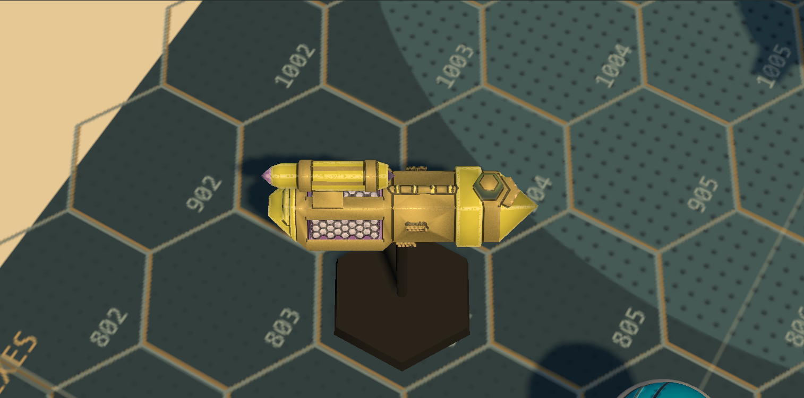

Shard: painted green / moulded clear green
The same authored fixture, 4.831 x 1.751 x 4.260 mm, from identical cameras. The left version remains the default. Open an image to inspect its native pixels.
Open painted prototype · Open clear variant · Scored review
Planning distance
Matched plan detail
Paint: opaque, lined and drybrushed

Clear: smooth, transmitting, no paint marks
Matched side detail
My preference: paint for planning readability; clear for the close-up kit impression. The fixture occupies only 23 planning pixels, so transmission is a detail-view benefit. Chris decides which version to keep.
The clear material is physical and emits nothing. Its thickness comes from the authored mating plane; transmission uses a thin-volume approximation and an opaque shadow. It adds a rendering pass: 104,649 submitted triangles / 110 draws in planning, compared with 69,736 / 73 for paint. No full-board recommendation is implied.